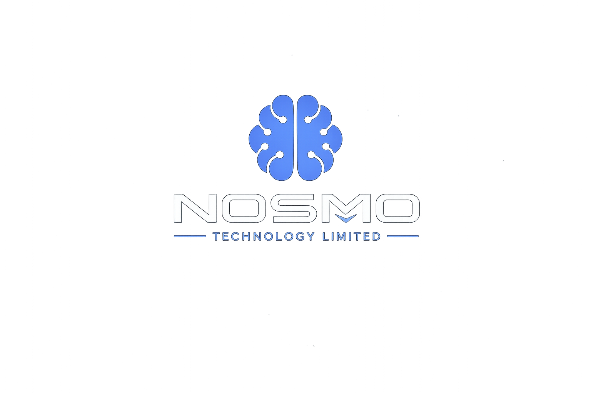
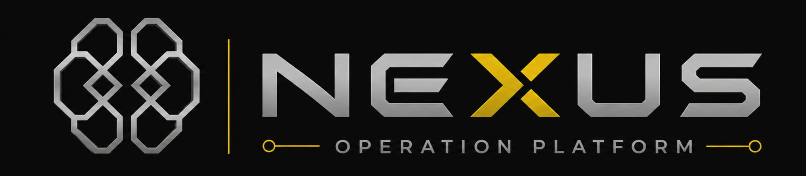
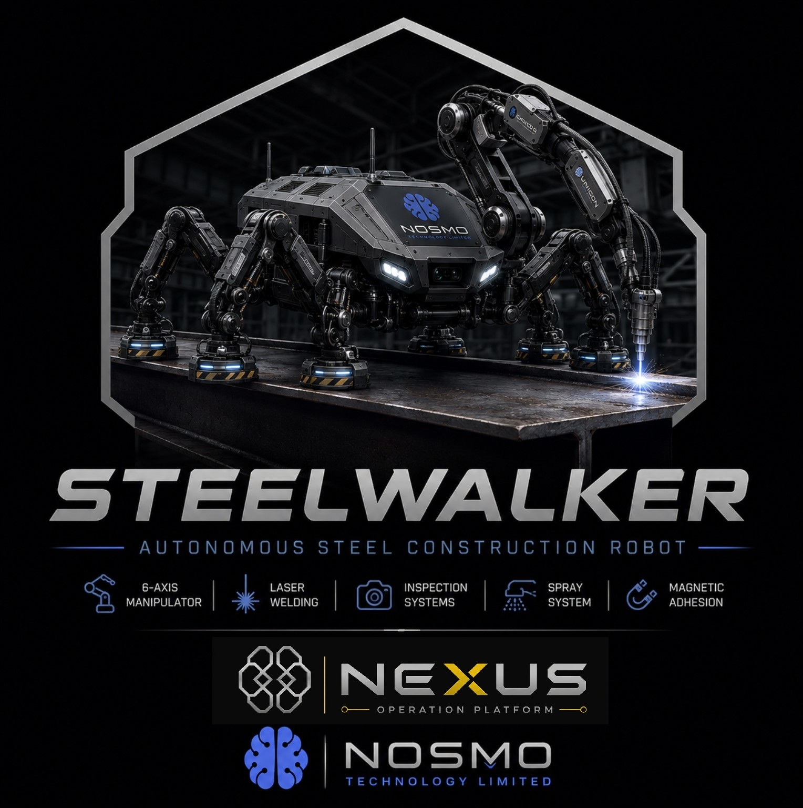
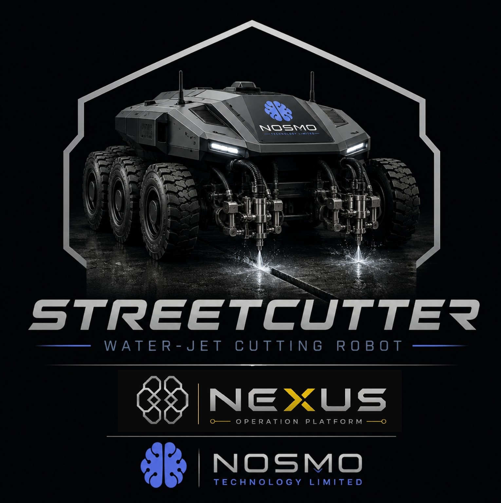

AI
NOSMO Core AI
Shared intelligence platform designed to power future software, robotic systems and operator interfaces.
- Computer vision
- Sensor fusion
- Task logic
- Robotic control
NOSMO Technology Limited develops software, artificial intelligence and robotic technologies for construction, infrastructure and industrial automation.

NOSMO Core AI
Shared intelligence layer for future software and robotic systems.NOSMO Technology Limited is a UK-based technology company focused on practical innovation. The company’s goal is to combine artificial intelligence, automation, robotics and real-world engineering experience into scalable industrial solutions.
The business is being developed around a shared technology foundation: one software and intelligence layer capable of supporting different machines, interfaces and field applications.
NOSMO is structured around reusable software, sensor intelligence and machine-control logic that can be adapted across construction, robotics and infrastructure systems.
Shared intelligence platform designed to power future software, robotic systems and operator interfaces.

AI-powered construction operating system focused on business memory, project intelligence, documents, people, workflows and specialist technology integration.
We don’t want to replace your technology. We want to make it smarter.
NOSMO is looking for strategic technology partners, not suppliers. Our goal is to build an AI-powered Construction Operating System that connects specialist products, project data, people, documents and workflows into one intelligent operating layer.
NOSMO provides the connective intelligence that helps construction teams understand, remember and act across fragmented systems.
Partners keep their own software, product identity and domain expertise. NOSMO becomes the intelligent layer that can connect and extend it.
Partner software remains independent while NOSMO becomes the intelligent layer connecting people, projects, documents and workflows. The result is more context, better handover, faster decisions and stronger adoption across the construction lifecycle.
NOSMO is open to collaboration with companies building technologies that can become specialist modules within the wider construction operating system.
Talk to NOSMO about integration, module partnerships, pilot projects or construction technology collaboration.
hello@nosmo.techResearch into autonomous systems capable of operating on steel structures and industrial environments.
Research into robotic platforms for precision infrastructure maintenance and automated surface processing.
Development of perception systems capable of understanding and interacting with real-world environments.
Operator-facing systems for visualisation, measurement, digital task control and remote assistance.
The following visuals represent early concept directions under research and evaluation. They are not presented as finished commercial products.

Industrial climbing robotics concept for inspection, maintenance and tool operations on steel structures.

Mobile surface-processing robotics concept for controlled cutting, marking and infrastructure work.
Founded by Mateusz Furmański, NOSMO combines construction experience, manufacturing knowledge, CNC development, 3D printing and software innovation into one industrial technology direction.
For collaboration, investment or development enquiries:
hello@nosmo.tech